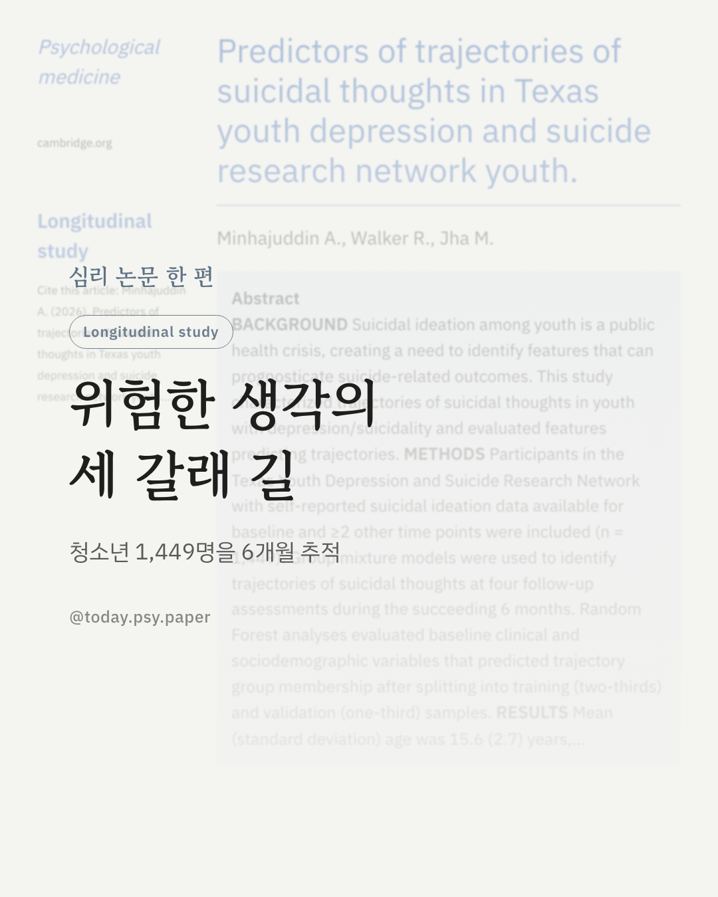
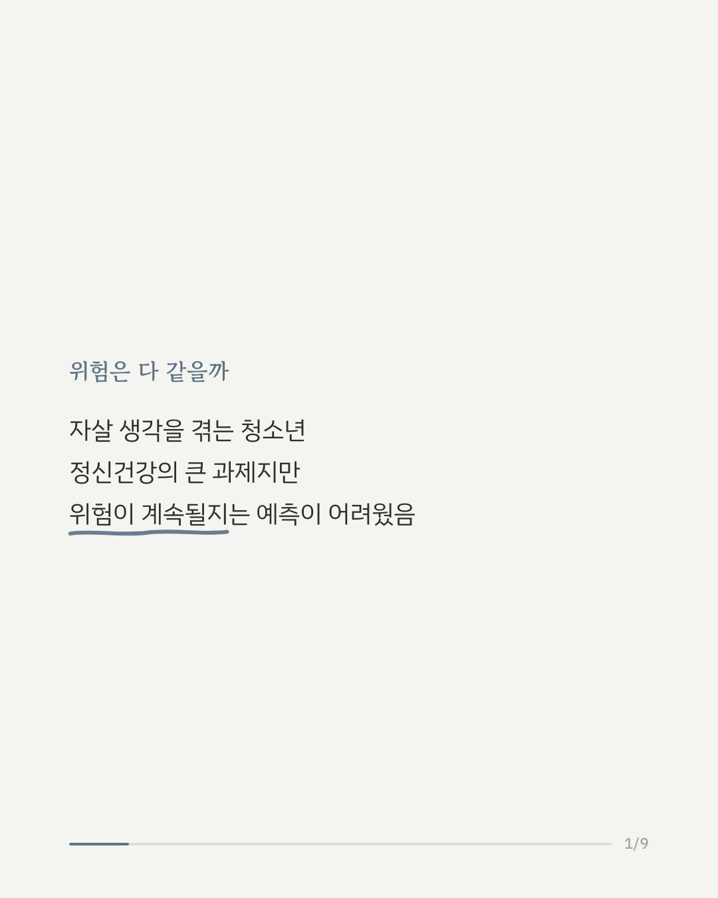
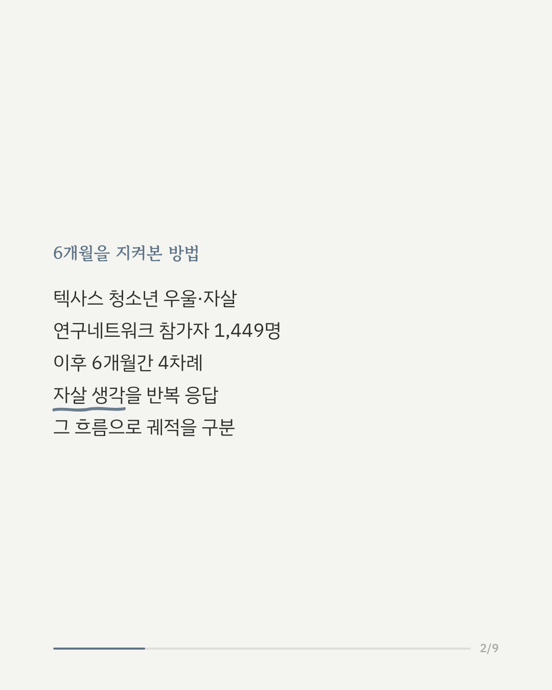
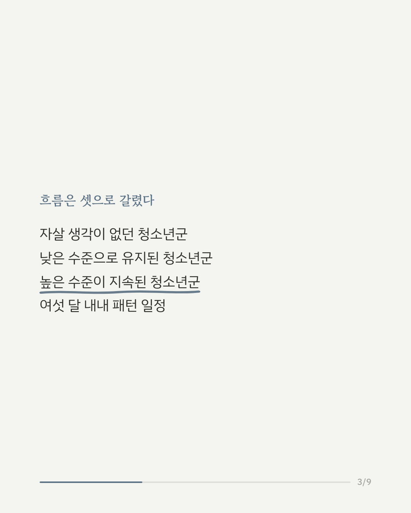
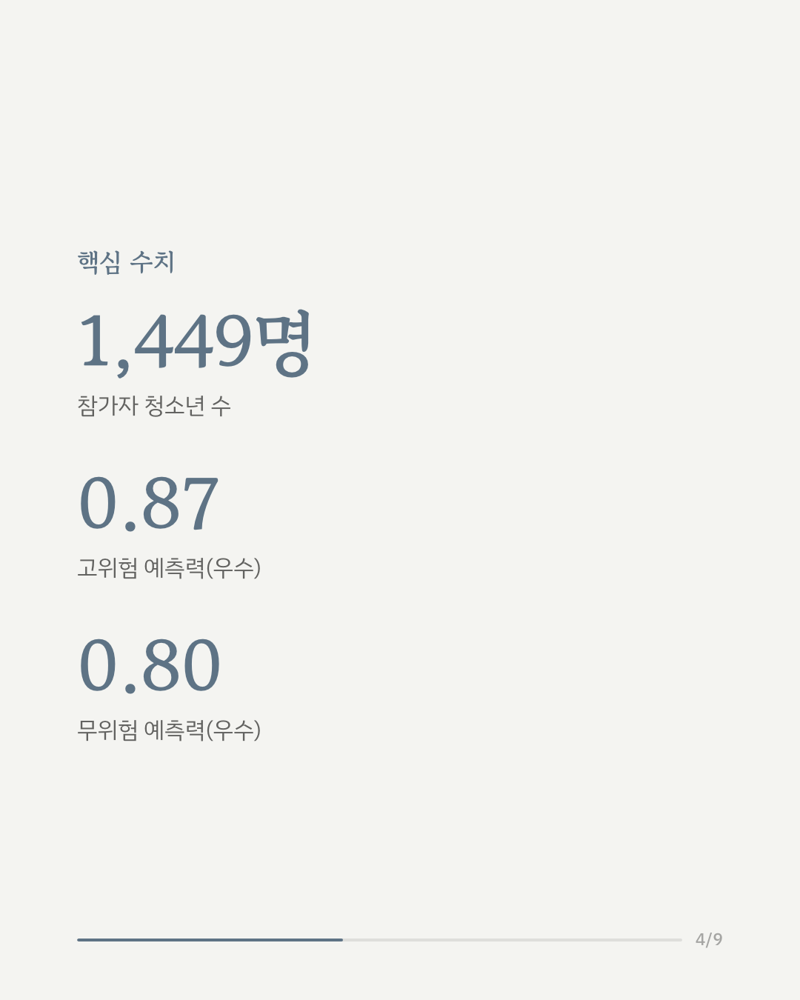
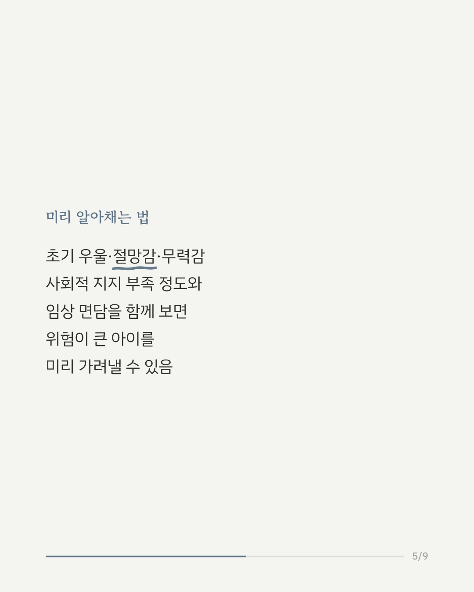
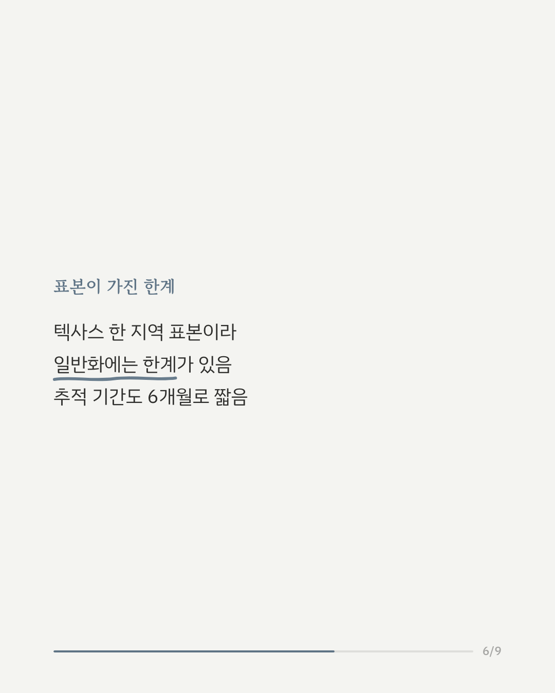
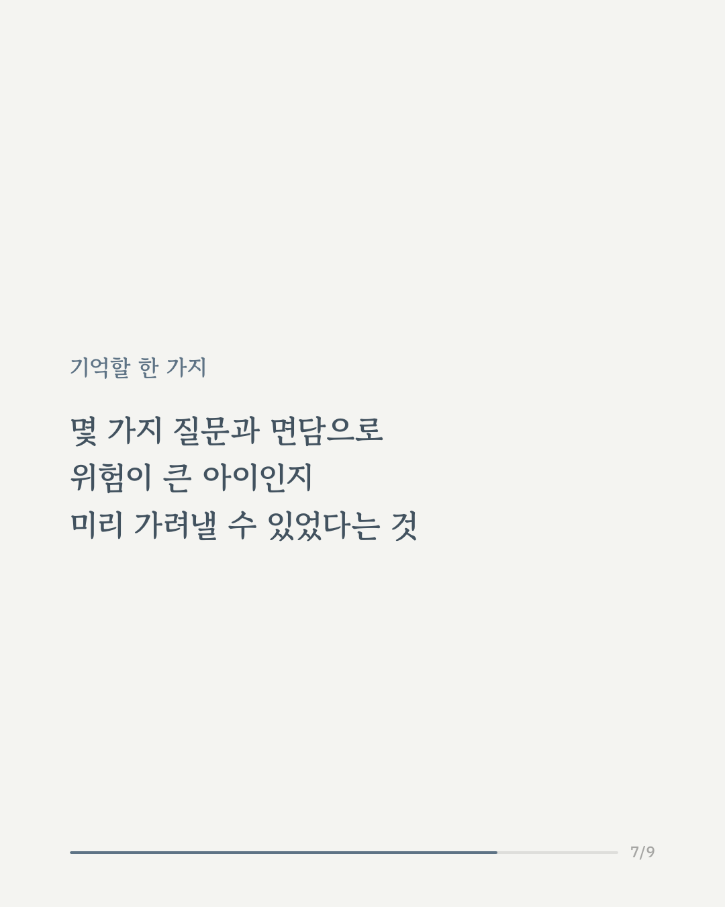
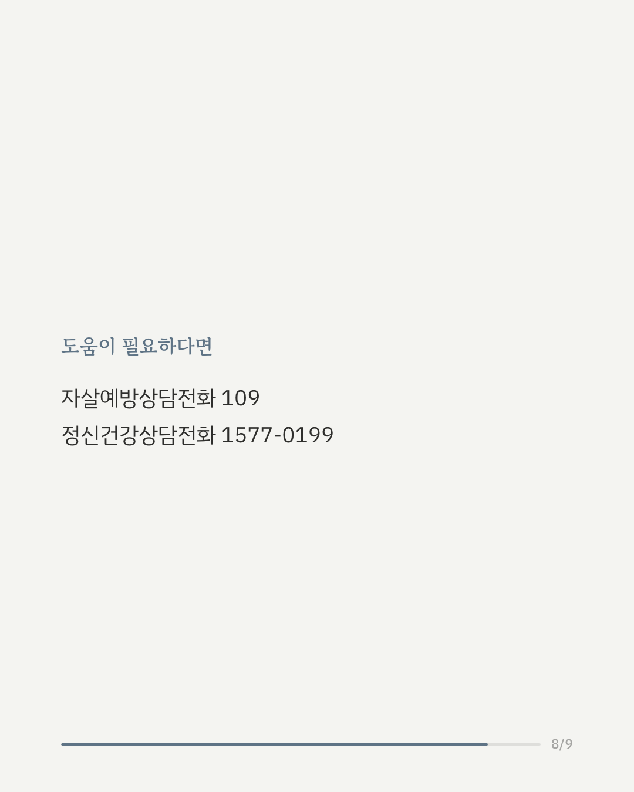
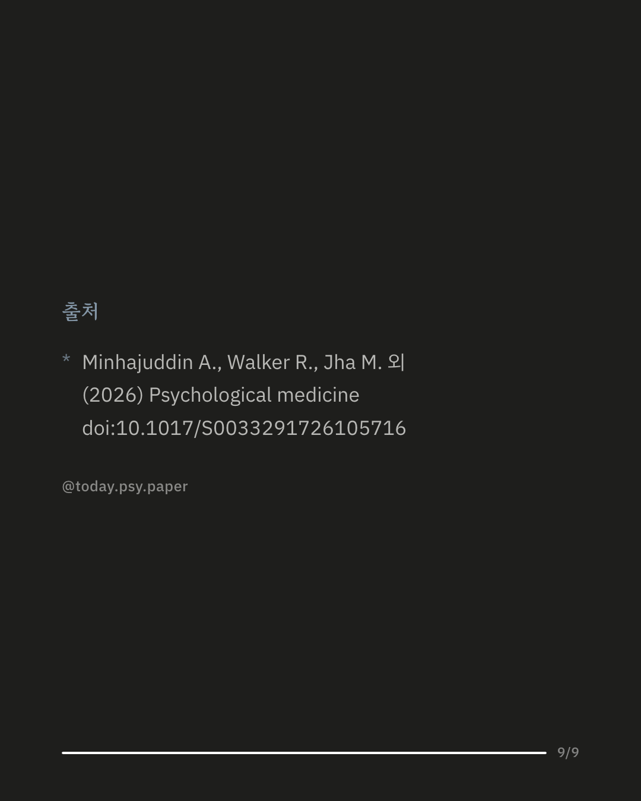

청소년의 우울증과 자살 생각은 흔히 함께 나타나지만, 그 생각이 시간이 지나며 어떻게 달라지는지는 잘 알려져 있지 않았습니다. 텍사스 청소년 우울·자살 연구네트워크는 자살 생각이 있는 청소년 1,449명을 6개월간 추적해 이 흐름을 살펴봤습니다. 그 결과 생각이 전혀 없었던 그룹, 낮은 수준으로 유지된 그룹, 높은 수준이 계속된 그룹까지 뚜렷이 다른 세 가지 흐름이 확인됐습니다. 초기 우울감, 절망감, 무력감, 사회적 지지 부족 정도를 물은 설문에 임상 면담 결과를 더하자, 6개월 뒤 어느 흐름으로 갈지 상당히 정확하게 예측할 수 있었습니다. 다만 이번 연구는 텍사스의 한 연구망에 등록된 청소년을 대상으로 했고, 참가자 대부분이 여성이었다는 점은 고려할 필요가 있습니다. 추적 기간도 6개월로 비교적 짧았습니다. 출처: Psychological Medicine (2026), 'Predictors of trajectories of suicidal thoughts in Texas youth depression and suicide research network youth' 힘든 마음이 들 때는 자살예방상담전화 109, 정신건강상담전화 1577-0199에서 도움을 받을 수 있습니다. #임상심리 #청소년정신건강 #자살예방연구 #정신건강연구
python3 publish.py 42779473